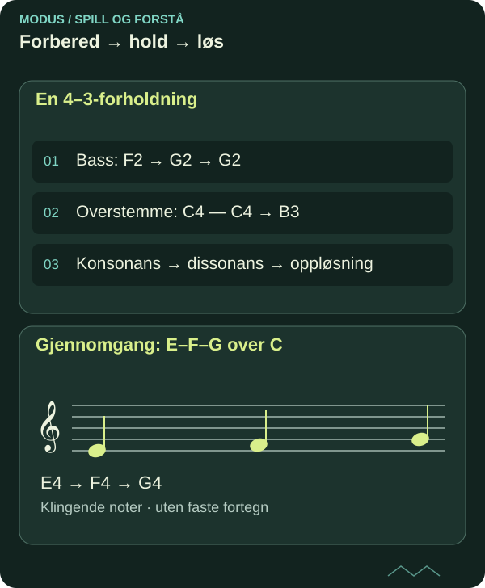

Dissonansbehandling: gjennomgangstoner og forholdninger
En tone utenfor akkorden får mening gjennom plassering og bevegelse. Undersøk to modeller som gir spenning en tydelig vei videre.
DETTE LÆRER DU
Dissonansbehandling: gjennomgangstoner og forholdninger
- Skille gjennomgangstone fra forholdning.
- Notere forberedelse, dissonans og oppløsning.

Gjennomgangstonen binder sammen
Over en holdt C-durklang kan melodien E–F–G fylle tersrommet. F er ikke treklangstone og blir gjennomgangstone når den forbinder E og G trinnvis. En enkel modell legger E og G på sterkere punkter og F på et svakere.
Et nabotoneforløp E–F–E vender derimot tilbake til utgangspunktet. De samme toneklassene får en annen melodisk funksjon. Merk hver tone med rolle i stedet for å skrive en ny akkord over hver åttendedel.

Les diagrammet som tekst
- En 4–3-forholdning: Bass: F2 → G2 → G2; Overstemme: C4 — C4 → B3; Konsonans → dissonans → oppløsning
- Gjennomgang: E–F–G over C: E4 → F4 → G4
Forholdning holder igjen en tone
En forholdning har forberedelse, dissonans og oppløsning. La overstemmens C klinge som konsonans over F i bassen. Hold C når bassen flyttes til G; C blir kvart over G. Før C ned til B mens G blir liggende. Det er en 4–3-forholdning.
Tallene viser intervaller over den aktuelle bassen ved dissonans og oppløsning. Den holdte tonen må faktisk være forberedt i denne strenge modellen. Et uforberedt betont sprang til dissonans krever en annen betegnelse og en annen forklaring.
Piano og gitar: gjør tidsforløpet hørbart
På piano holder venstre hånd først F2 og deretter G2. Høyre hånd spiller C4 og binder tonen over basskiftet før den går til B3. Spill i 4/4: F/C på slag 3–4 i første takt, G/C på slag 1 i andre og G/B på slag 2. La siste C-tonika komme i en tredje takt.
På gitar tar du opp bassen separat og spiller C på andre streng bånd 1, så B på åpen andre streng. Ikke slå C på nytt ved basskiftet i første versjon. Sammenlign med en versjon der du faktisk angriper tonen på nytt; artikulasjonen endrer hvordan forbindelsen høres.
Kontrollert frihet i egen sats
Skriv fire takter med én gjennomgangstone og én forholdning. Marker akkordtoner og akkordfremmede toner. Gjør så en rytmisk variant der gjennomgangstonen blir betont og beskriv hvilken forventning det skaper. Stilen kan tillate den, men analysen må registrere endringen.
I et metalriff kan en lang kvart være en stabil sus-klang uten oppløsning. Det er en annen organisering enn klassisk forholdning. Gi den åpne klangen et eget formål og sammenlign med den løste versjonen. Målet er å kunne velge mellom videreføring og tilbakeholdt spenning.
Kildegrunnlag og faglig status
Original norsk MODUS-tekst med egne undervisningseksempler. Faglig referansegrunnlag for videre kontroll:
Under arbeid – ikke faglig sluttgodkjent. Artikkelen dokumenterer ingen personlig mestring og gir ingen formell studie- eller publiseringsgodkjenning. Skriftlig forklaring, faktisk spill og lytting må vurderes hver for seg.
FRA LESING TIL SPILLING
Prøv det selv.
Noter og spill en 4–3-forholdning med bundet tone og en trinnvis gjennomgang. Lag en fri variant og begrunn forskjellene i timing og stil.
- Gjør et selvstendig første forsøk før du ser quizfasiten.
- Spill den konkrete modellen på gitar og piano, og lytt til forskjellen.
- Lag en ny variant og behold første og bearbeidede versjon separat.
SJEKK FORSTÅELSEN
Hva sitter igjen?
Tre spørsmål om det du har lest. Alle tre riktige gir fullført quiz. Du kan prøve så mange ganger du vil.
Fullføring lagres i denne nettleseren og deles mellom norsk og engelsk.
Du har svart riktig på alle tre spørsmålene. Ta ideen med til instrumentet.
Til artikkelbiblioteket ↗︎ANBEFALT NESTE STEG
Imitasjon, kanon og partimento: la en idé skape sats
Neste del av den foreslåtte faglige ruten. Velg emner ut fra forkunnskap og behov.
Imitasjon, kanon og partimento: la en idé skape sats ↗︎